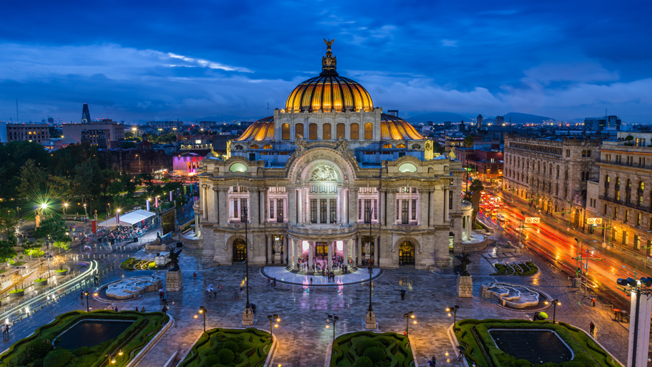

The Palace of Fine Arts is a cultural centre in Mexico City that was built between 1904 and 1934. The palace contains a large theatre, concert hall, museum of popular arts, and halls and galleries for paintings and other works of art.
Balcony lobbies display murals by Diego Rivera, José Clemente Orozco, and other Mexican artists as well as examples of 19th- and 20th-century Mexican painting and special displays of paintings and sculpture are featured.
